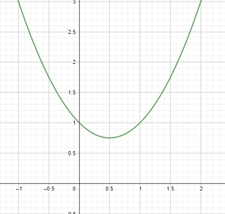
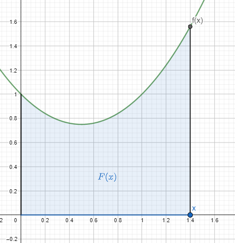
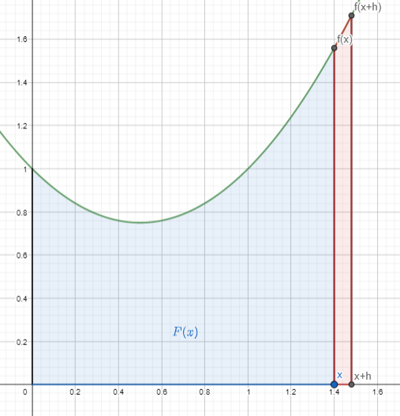

The integral
Given a function \(f\), we know that integrating \(f\) over an interval \([a,b]\) is defined as calculating the area under the graph of \(f\) in that range.
 Integral of \(f\) from \(a\) to \(b\)
This is all nice and good, but how do we calculate this area? The usual definition of integral involves making a Riemann sum, which basically consists on dividing the regions whose area we want into small rectangles and summing up their areas, and then taking the limit until we get infinitely small rectangles.
Integral of \(f\) from \(a\) to \(b\)
This is all nice and good, but how do we calculate this area? The usual definition of integral involves making a Riemann sum, which basically consists on dividing the regions whose area we want into small rectangles and summing up their areas, and then taking the limit until we get infinitely small rectangles.
This is good for defining the integral, but it is not very practical for calculating it. How would se calculate something like \( \int_0^1 x^2 dx \)? It is not very practical to divide the region into small rectangles and then taking the limit of the sum of their areas.
However, there is a great way of calculating integrals, which is given by the fundamental theorem of calculus
Fundamental Theorem of Calculus
First of all, given a function \(f(t))\), we will define a new function, which we will call the area function of \(f(t)\). This function is going to be defined as:
\( F(x) = \int_0^x f(t) dt \)
That is, the function \(F(x)\) is defined as the area under the curve of \(f\) from \(0\) all the way to \(x\).
For example, consider the function \(f(t) = t^2 - t + 1\) which is plotted below:

Plot of \(f(t) = t^2 -t + 1\)
Now, to calculate the area function \(F(x)\) for some chosen value of \(x\), we first locate this point \(x\) on the horizontal axis and its value under the original function \(f(x)\). Then, \(F(x)\) is defined as the area under the curve in the region going from \(0\) to \(x\). This region is colored blue in the following image:

\(F(x)\)
So, \(F(x)\) would be the are on that blue region. An area that we are not sure how to calculate just yet but that nevertheless has some determined value. To find this area, we will first do something that seems to be completely disconnected from this topic.
Even though we can't calculate \(F(x)\) yet, we can differentiate \(F\)! To differentiate it, we just follow original definition of derivative, according to the definition, the derivative of \(F(x)\) is given by:
\( F'(x) = \lim_{h \rightarrow 0} \dfrac{F(x+h)-F(x)}{h} \)
We can calculate this derivative visually! To do it, we will first add a small amount \(h\) to \(x\) and put this point \(x+h\) in the image. I've also added to the image the point \(f(x+h)\) on the curve and painted the small region in between \(x\) and \(x+h\)

Although we don't see any use for calculating this derivative, it won't take us much effor to calculate it and it's worth trying in order to see if it leads us somewhere.
Now, to calculate the derivative, according to the formula we need \(F(x+h)\). But because of the way we defined \(F\), \(F(x+h)\) is the total area under the curve from \(0\) to \(x+h\), which is the total area of the blue and red regions in the image. On the other hand, \(F(x)\) is just the area of the blue region. Therefore, we have that \(F(x+h) - F(x)\) is the area of the red region only
This area can be calculated easily, because \(h\) is supposed to be very small (and we will take the limit as \(h\) tends to 0), we can approximate the red region as if it where a perfect rectangle. In that case, the base of the rectangle would be \(h\) and its height would be approximately \(f(x)\). Therefore, the area of the red region is equal to \(f(x)h\)
With all that, the derivative of \(F(x)\) is given by:
\( F'(x) = \lim_{h \rightarrow 0} \dfrac{F(x+h)-F(x)}{h} = \lim_{h \rightarrow 0} \dfrac{\text{Area red region}}{h} =\)
\( =\lim_{h \rightarrow 0} \dfrac{f(x)h}{h} = \lim_{h \rightarrow 0} f(x) = f(x) \)
This is remarkable. We don't know tha area function \(F(x)\), but we know its derivative! At any point \(x\), the derivative of \(F(x)\) is just equal to the original function \(f\) evaluated at \(x\). This can be written as follows, remembering the definition of \(F(x)\):
\( \dfrac{d}{dx} F(x) = f(x) \)
\( \dfrac{d}{dx} \int_0^x f(t) dt = f(x) \)
This result is known as the First fundamental theore of calculus and it basically says that integration is the opposite operation to differentiation. But how does that help us calculate the integral of \(f(x)\) over an interval \([a,b]\)?
Well, that's easy, according to the fundamental theorem, \(F(x)\) is some function with the special property that if we derive it, we get the function \(f(x)\
Therefore, to get \(F(x)\) we only need to look for such a function that when derived gives us back \(f(x)\). Searching for such a function is not easy and there are general methods for obtaining it only in special cases.
However, in our example \(f(x) = x^2 - x + 1\), and it is easy to find a function whose derivative if \(f(x)\). Such a function could be the following:
\(F(x) = \dfrac{x^3}{3} - \dfrac{x^2}{2} + x +C \)
Where \(C\) is any constant number, and it will disappear when we differentiate. You can check that this function \(F(x)\) really satisfies the property \(F'(x) = f(x)\) by differentiating it.
Therefore, we have found our area function \(F(x)\), or at least we have found it up to a constant.
Now, how do we use this to calculate \(\int_a^b f(t) dt\) ? Well, this integral is the area of the region under the curve between \(a\) and \(b\). But to find it, we could first calculate the area in the region from \(0\) all the way to \(b\) and then substract the area from \(0\) to \(a\), the remaining region will go from \(a\) to \(b\). So we conclude that:
\( \int_a^b f(t) dt = \int_0^b f(t) dt - \int_0^a f(t) dt \)
But the two integrals on the right are just the definitions of \(F(b)\) and \(F(a)\). Therefore, we have the second fundamental theorem of calculus:
\( \int_a^b f(t) dt = F(b) - F(a)\)
And this is what we can use to calculate the integral. Notice that even though \(F(x)\) had some unknwon constant we needed to determine, when calculating \(F(b)-F(a)\) that constant would disappear and we are left with a known value.
So, considering the function we have been dealing with \(f(t) = t^2 - t +1\), we found that the function \(F(x)\) whose derivative is \(f\) was given by \(F(x) = \dfrac{x^3}{3} - \dfrac{x^2}{2} + x +C \). And then, we can calculate the integral of \(f(t)\) simply as:
\(\int_a^b f(t) dt = \dfrac{b^3}{3} - \dfrac{b^2}{2} + b - (\dfrac{a^3}{3} - \dfrac{a^2}{2} + a) \)
Summary:
- We want to calcualte \( \int_a^b f(t) dt\) which is defined as the area under \(f\) in the region from \(a\) to \(b\)
- We don't know how to calculate that area other than by using Riemann sums, which would be very impractical and difficult
- We define a new function \(F(x) = \int_0^x f(t) dt \) which for any \(x\) gives the area under \(f\) going from \(0\) to \(x\)
- Using a geometrical argument (which can be made rigorous) we find that \(F'(x) = f(x)\)
- This allows us to find \(F(x)\), we only need to find a function that when differentiated gives us back \(f(x)\)
- Once we find this function, we can calculate the integral as \( \int_a^b f(t) = F(b)-F(a)\)
So calculating integrals doesn't require doing long sums. To do it, we only need to find a function whose derivative is the original function and then evaluate it at the limits of integration and substract. There are many methods for finding a function whose derivative is a given function and it can get considerably complicated or even impossible to do so, but it is still practical for many cases.